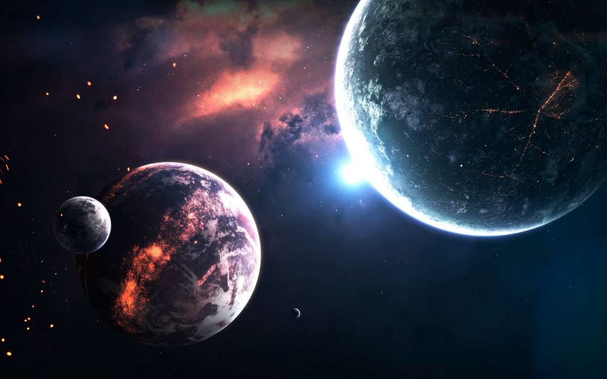
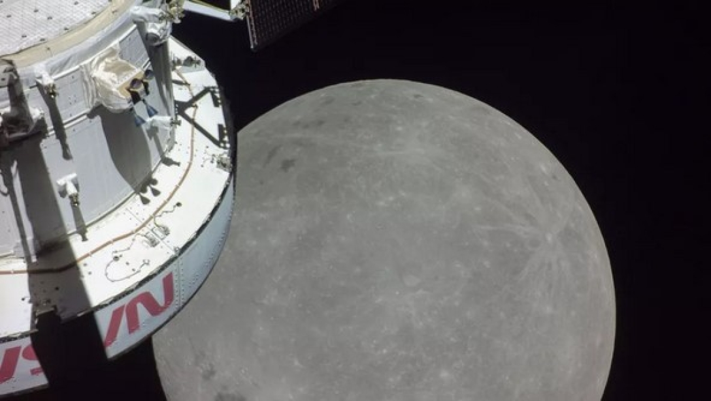
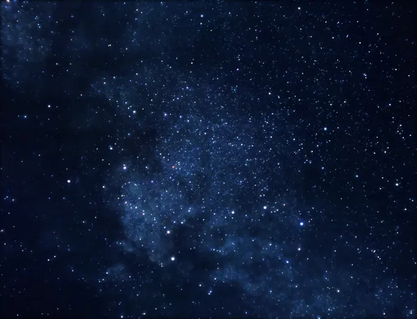

Все про космос
Космос — це безмежний простір, що починається за межами нашої атмосфери та простягається на неймовірні відстані, охоплюючи планети, зірки, галактики та навіть цілі туманності. Людство з давніх часів захоплювалося небесними тілами, дивлячись у небо і намагаючись зрозуміти, що знаходиться за межами нашої планети. Однак тільки в ХХ столітті люди змогли здійснити перші польоти в космос і відправити туди техніку для досліджень.
Місяць та перший політ
Значною віхою в дослідженні космосу стало відправлення людини на Місяць та перший політ Юрія Гагаріна в 1961 році. З того часу космічні дослідження активно розвиваються. Супутники та телескопи, що знаходяться на орбіті, допомагають нам дізнаватися про Всесвіт усе більше, розкриваючи таємниці планет, астероїдів і чорних дір.
Міжнародна космічна станція
Окрім цього, космос є важливим для наукового прогресу. Наприклад, Міжнародна космічна станція (МКС) стала лабораторією для проведення експериментів у невагомості, що допомагає вченим отримувати знання, які неможливо отримати на Землі. Дослідження Марсу також є важливим кроком до можливого життя поза межами Землі.
Космос захоплює
Космос захоплює не тільки вчених, а й звичайних людей. Сьогодні кожен може спостерігати за зірками, мріючи про далекі світи, або навіть відправитися у космічний туризм, який уже стає реальністю завдяки компаніям, що розробляють приватні космічні польоти. Космос — це наша майбутня арена для відкриттів, нових технологій і, можливо, наступне місце для життя.
